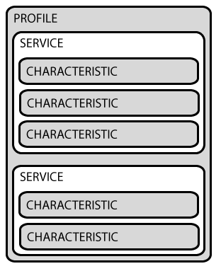

Bluetooth Low Energy
BME554L -Fall 2025 - Palmeri
What is Bluetooth?
- Bluetooth Low Energy (BLE) is a wireless serial communication protocol.
- Part of BT 4.0 core; very distinct from previous version of BT.
- Standardized via the BT Special Interest Group (SIG)
- “Only” ubiquitous communication protocol between device:OS (iOS, Android, OS X, Windows, Linux)
- Designed for technology in smart homes, health, sport and fitness.
- “Low energy” - months/years of power on single battery (e.g., CR2032)
- Small size & low cost
Generic Access Profile (GAP)
- Peripheral Device: more resource-constrained (power, size, horsepower) device
- Central Device: more resource-equipped device that will do most processing and data storage
Device Advertising
- 31 bytes of data
- Can configure advertising interval (frequency proportional to energy consumption)
- Optional: Scan Response Request

- Once a connection is established, advertising ceases and GATT operations take over.
Broadcast Topology
Mesh Profiles
- BLE peripherals can communicate with one another to pass information to other devices (that might otherwise be out of range).
- Common example: lights in a building
- Zephyr has its own standard protocol: https://launchstudio.bluetooth.com/ListingDetails/95153
Generic Attribute (GATT) Profiles
- API used by all BLE devices.
- Client: initiates GATT commands/requests & accepts responses (e.g., smartphone)
- Server: receives GATT commands/requests & returns responses (e.g., wearable sensor)
- Characteristic: Data value communicated between client/server
- Service: Collection of related characteristics (similar to a structure or class/object)
- Descriptor: optional characteristic metadata (e.g., value units)
GATT Profiles

Universally Unique Identifier (UUID)
- Identifiers are used to identify all attributes.
- Services
- Characteristics
- Descriptors
- UUIDs are specified by the BT SIG. They are 128-bits, but 16- or 32- bits represent the unique information.
- Can be used to encode information, such as manufacturer, project ID, firmware revision, etc.
Generating UUIDs
Online generators exist to create valid UUIDs: https://www.uuidgenerator.net/
- Example:
b562bf0c-0039-418e-9756-8b271b33d5be - The “base” UUID can be set for a device and then incremented for custom services not in the standard GATT.
GATT Workflow
- UUIDs can be discovered or explicitly found.
- Service characteristics can be discovered.
- Data can be read (server -> client) using either a UUID or handle (similar to an “alias”).
- Data can be written to the server using the handle (with or without response).
- Data streams are limited / dictated by the Maximum Transfer Unit (MTU), which can be extended, but with tradeoffs.
Notifications
- A notification can be sent by the server when a characteristic is available for the client (e.g., data stored in the characteristic has been updated). The client is responsible for then reading the characteristic.
- Notifications avoid the client having to periodically read a characteristic to determine if a value has been updated or is available.
- Notifications are similar to an ISR for the client to know to send a read request to the server.
- An indication is a notification that requires a response from the client.
Firmware Implementation
The following library is used as a skeleton for BLE communication in your final project:
Resources
- Adafruit: introduction to Bluetooth Low Energy
- Wikipedia: BLE
- BLE: Mesh Networking
- Zephyr: Battery Service (BAS)
- Nordic DevAcademy BLE Fundamentals